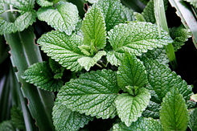
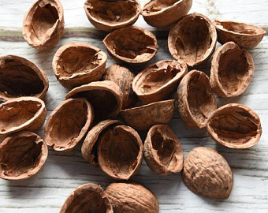
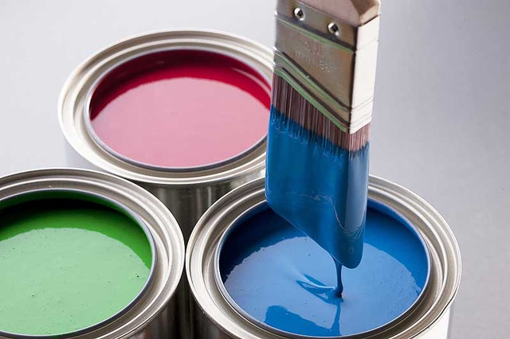

Павук вселяється в будинок через забрудненість приміщень,
наявності підвищеної вологості та тепла в ньому, які
створюють ідеальні умови для життєдіяльності комахи.
Визначивши провокуючий фактор, потрібно використати кошти
від нашестя павуків до приватного будинку або їхньої присутності на вулиці.
У павука сильно розвинений нюх, тому,
щоб його відлякувати, необхідно створити
для комах несприятливі умови.
1. Непереносні запахи
Павукам не подобається запах перцевої м'яти.
Якщо ця рослина посадити на дачі,
то його пахощі захистять від проникнення комахи.

Відокремлюватися від членистоногих можна
також ароматом подрібненої шкаралупи
волоського горіха, різким запахом фарби чи побілки.


2.Природні вороги
Павуки мають природні вороги.
В основному предмети полювання - це птахи, мухи,
оси, жаби, риби. Люблять полювати на дрібних
комах і котів. Якщо у квартирі присутній
такий домашній вихованець, павуки зникнуть.
3. Ультразвук
Допомагає впоратися з такою проблемою
засіб від павуків у квартирі, як електричний
ультразвуковий відлякувач. Цей пристрій
досить ефективно, але застосовувати його слід обережно.